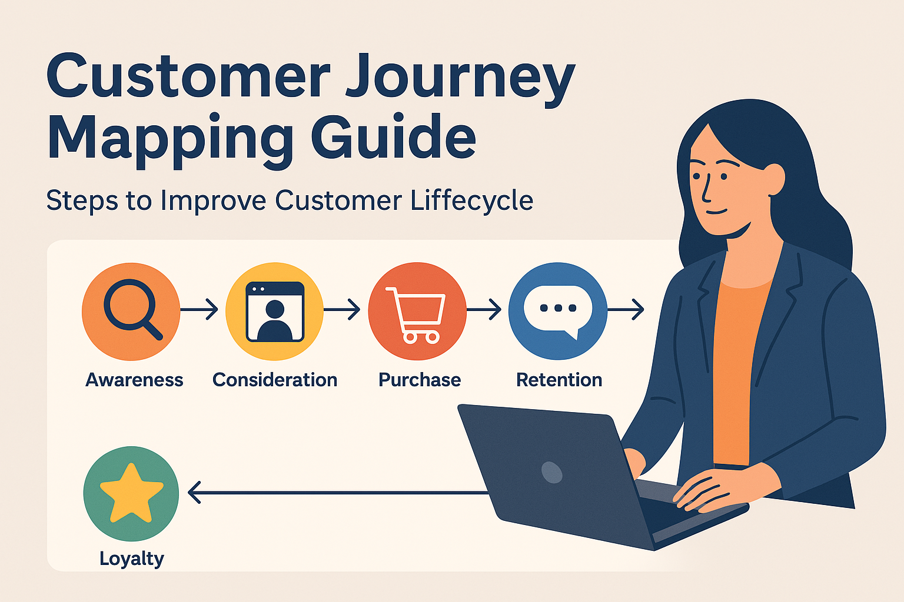

Customer Journey Mapping Guide
Every customer interaction tells a story. Brittany Hodak’s framework helps brands map that journey—from awareness to advocacy—so they can connect at every stage.
Book Brittany to Speak

Key Journey Mapping Topics
🔍 Awareness & Consideration
Learn how to align your brand messaging with early-stage discovery behaviors.
🛒 Conversion Optimization
Create seamless transitions from interest to action through better UX and persuasive storytelling.
💬 Retention & Advocacy
Build feedback loops, loyalty programs, and surprise moments that inspire superfans.